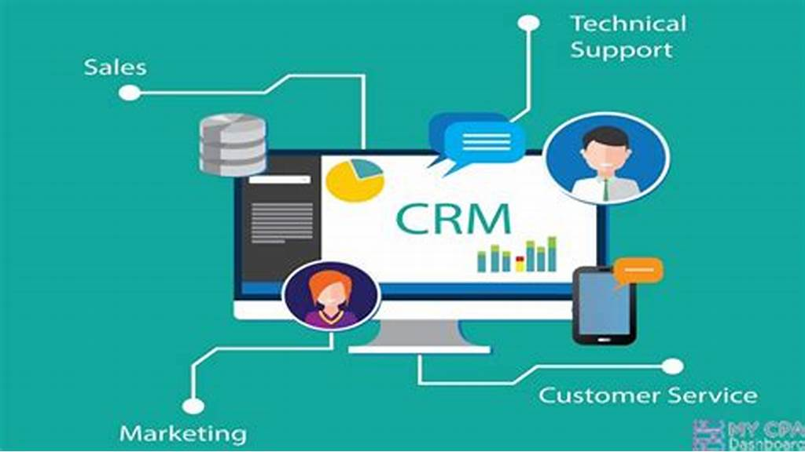

| Customer Relationship Management (CRM): | Solutions like Salesforce help businesses manage customer interactions, track leads, and analyze customer data to improve service and sales. |
|---|---|
| Enterprise Resource Planning (ERP) | Systems like SAP and Oracle integrate various business processes such as finance, HR, and supply chain into a single cohesive system, promoting efficiency and data accuracy. |
| Project Management Software | Tools like Asana and Trello facilitate task management and project tracking, enabling teams to collaborate effectively and meet deadlines. |
| Collaboration Tools | Platforms like Slack and Microsoft Teams enhance communication within organizations, supporting remote work and real-time collaboration. |

Choosing the Right Software
Enterprise technology is essential for the growth and successs of organisations with so many options available , choosing the right type for your needs can be challenging, in todays landscape enterprise technology is key to staying relevant and being productive.